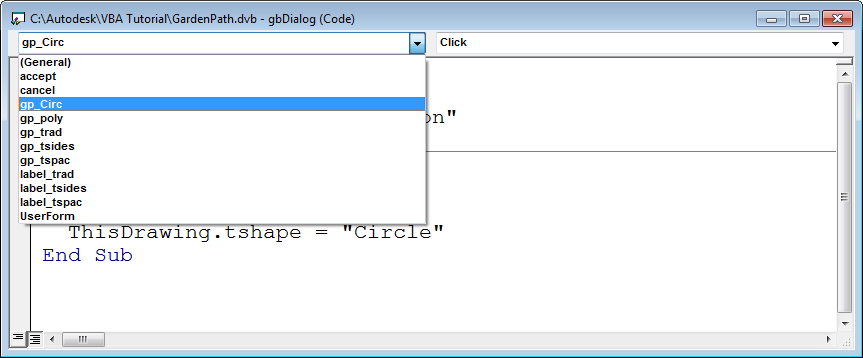
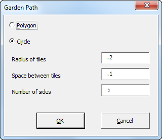

Autodesk AutoCAD 2021: ActiveX Developer's Guide > ActiveX/VBA Tutorial: Design the Garden Path > Tutorial: Designing a Garden Path (VBA/ActiveX) >
Events are triggered as a result of the user interacting with controls on a user form along with when predefined actions occur to the user form.
When you open the AutoCAD Objects folder (it may already be open), you see a drawing icon and the name ThisDrawing. When you open the Forms folder (it may already be open), you see a form icon and the name gpDialog, the form you created.
In the following steps, you learn to work with the Project Explorer window.
 Project Explorer window or press Ctrl+R to display the Project Explorer window.
Project Explorer window or press Ctrl+R to display the Project Explorer window. A code module opens in the Code window, while a user form opens in the Form Editor window.
In the following steps, you update the existing code of the ThisDrawing module.
Public trad As Double ' Updated Public tspac As Double ' Updated Public tsides As Integer ' Add Public tshape As String ' Add
The variables need to be set as Public so they can be accessed and modified from the code in the user form. The tsides variable will hold the number of sides for the polygon tile and tshape variable will hold the tile shape chosen; either circle or polygon.
trad = ThisDrawing.Utility.GetDistance(sp, "Radius of tiles: ") tspac = ThisDrawing.Utility.GetDistance(sp, "Spacing between tiles: ")
Adding an apostrophe turns the code statements into comments, allowing you to keep the code in the project while not allowing it to be executed. The code should now look like the following:
' trad = ThisDrawing.Utility.GetDistance(sp, "Radius of tiles: ") ' tspac = ThisDrawing.Utility.GetDistance(sp, "Spacing between tiles: ")
' Load and display the Garden Path user form Load gpDialog gpDialog.Show
' Draw the tile with the designated shape
Sub DrawShape(pltile)
Dim angleSegment As Double
Dim currentAngle As Double
Dim angleInRadians As Double
Dim currentSide As Integer
Dim varRet As Variant
Dim aCircle As AcadCircle
Dim aPolygon As AcadLWPolyline
ReDim points(1 To tsides * 2) As Double
' Branch based on the type of shape to draw
Select Case tshape
Case "Circle"
Set aCircle = ThisDrawing.ModelSpace.AddCircle(pltile, trad)
Case "Polygon"
angleSegment = 360 / tsides
currentAngle = 0
For currentSide = 0 To (tsides - 1)
angleInRadians = dtr(currentAngle)
varRet = ThisDrawing.Utility.PolarPoint(pltile, angleInRadians, trad)
points((currentSide * 2) + 1) = varRet(0)
points((currentSide * 2) + 2) = varRet(1)
currentAngle = currentAngle + angleSegment
Next currentSide
Set aPolygon = ThisDrawing.ModelSpace.AddLightWeightPolyline(points)
aPolygon.Closed = True
End Select
End SubSet cir = ThisDrawing.ModelSpace.AddCircle(pltile, trad)
Comment out the occurrences of the code statement and add the following below the statement to draw the appropriate tile shape:
DrawShape pltile ' Updated
In the following steps, you add code to the gpDialog user form to define the behavior of the form's controls and what happens when the user form is loaded.

gp_tsides.Enabled = True ThisDrawing.tshape = "Polygon"
The code enables the gp_tsides text box and sets the tshape variable of the ThisDrawing module to the text string Polygon.
gp_tsides.Enabled = False ThisDrawing.tshape = "Circle"
The code disables the gp_tsides text box and sets the tshape variable of the ThisDrawing module to the text string Circle.
Private Sub accept_Click()
If ThisDrawing.tshape = "Polygon" Then
ThisDrawing.tsides = CInt(gp_tsides.text)
If (ThisDrawing.tsides < 3#) Or (ThisDrawing.tsides > 1024#) Then
MsgBox "Enter a value between 3 and " & _
"1024 for the number of sides."
Exit Sub
End If
End If
ThisDrawing.trad = CDbl(gp_trad.text)
ThisDrawing.tspac = CDbl(gp_tspac.text)
If ThisDrawing.trad < 0# Then
MsgBox "Enter a positive value for the radius."
Exit Sub
End If
If (ThisDrawing.tspac < 0#) Then
MsgBox "Enter a positive value for the spacing."
Exit Sub
End If
GPDialog.Hide
End SubThis code tests whether the user choose polygon as the tile shape and specified a valid number of sides for the polygon. The radius and spacing values entered in the text boxes are saved to the variables trad and tspac. Conditional statements are also used to make sure the values of trad and tspac are not 0.
After the values are obtained and verified, the gpDialog.Hide statement hides the form, passing control back to the subroutine that first called the form.
Private Sub cancel_Click() Unload Me End End Sub
This event handler unloads the form and terminates the entire macro.
Private Sub UserForm_Initialize() gp_circ.Value = True gp_trad.Text = ".2" gp_tspac.Text = ".1" gp_tsides.Text = "5" gp_tsides.Enabled = False ThisDrawing.tsides = 5 End Sub
This event handler is executed when the user form is loaded the first time in a session.
In the following steps, you test the code added to the gpDialog user form.
Applications panel Run VBA Macro.
Start point of the path:
prompt, enter 2, 2.Endpoint of the path:
prompt, enter 9, 8.Half width of the path:
prompt, enter 2.